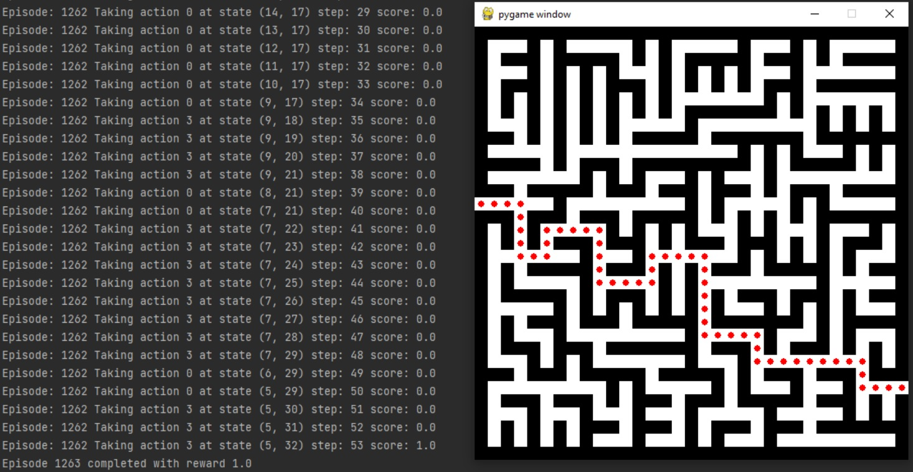
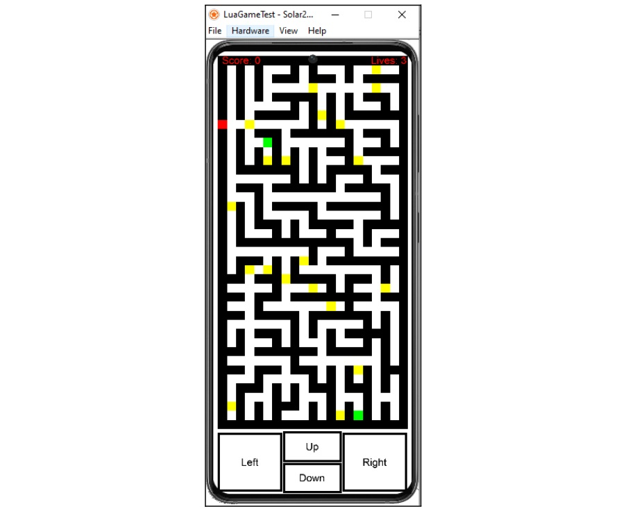
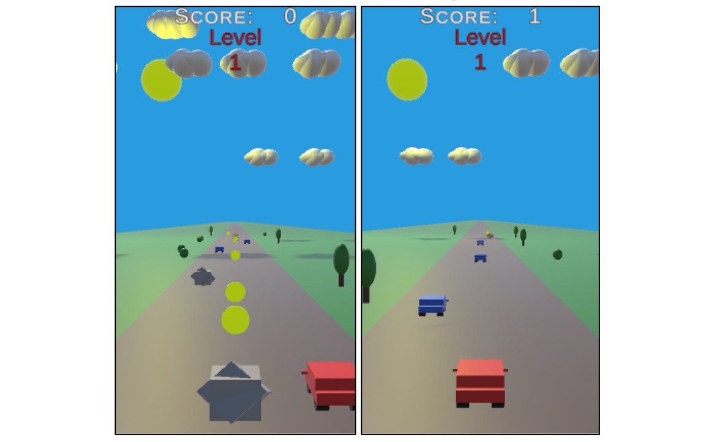

Hi, my name is Joseph Colliston.
I am a recent Computer Science graduate.
I recently graduated with a first class honours in a BSc Computer Science course at university. I have completed various projects, such as creating an interactive website using React.js and Node.js, as well as developing artificial intelligence capable of learning and completing 2D dynamic mazes, software capable of generating wordclouds based on the most trending words on Twitter and much more!
My Skills
- Python, C# and Java
- HTML, CSS, PHP, React.js and Node.js
- Debugging
- Testing Code
- Time Efficient
- Team Collaboration
- Github Experience
- Self-Reflect & Improve
My Projects
Developed a website using React & Node
Created an interactive website, with a React.js frontend and Node.js backend. The idea was to create an up-to-date sports news feed site. The 'NewsAPI' has been used to gather the latest news posts surrounding a sports team that the user selects. XAMPP has been used to connect to a database, to allow users to sign up and log in.

Dissertation Project
Created software capable of creating multiple wordclouds to showcase the change in trends amongst Twitter tweets over time using Python. Using a large variety of external libraries such as numpy, pandas, wordcloud and moviepy, I was able to successfully complete my dissertation project. A 'settings' UI has been developed to allow the customisation of the wordclouds.

Artificial Intelligence Project
Developed an intelligent agent capable of learning and completing dynamic 2D mazes using Python. This was completed using a Q Learning approach. A neutral reward (0) is given to the intelligent agent for navigating in the maze 'paths', a negative reward (-1) is given to the agent for moving into a wall, and a positive reward (1) is given once the agent reaches the goal. The exploration rate and learning rate were fine-tuned to allow the agent to complete the overall goal as soon as possible.

Created a Lua mobile application
The idea was to create a multi-level game usable on any mobile device. Prim's algorithm has been used for the generation of mazes. The game has 10 levels overall with each level increasing in difficulty by inserting more enemies into the maze.

Created an Android application
Created an endless game in C# - the user plays until they lose to achieve high scores. The user can tap and/or hold their finger on the sides of the screen to move their car left or right to dodge obstacles and collect coins.

Website Development Team Project
Developed a "learning portal" usable by university students using HTML, CSS, PHP and some JavaScript. I was in charge of some of the administration functionalities & general functionalities students can make use of. This project allowed us to increase our team-working skills and communication. We used GitHub to collaborate on work.

Get In Touch
I would love for you to get in touch with me! Here are my contact details:
- +44 7484 649638
- joecolliston@hotmail.com

{kind=link}
{kind=link}
{kind=link}